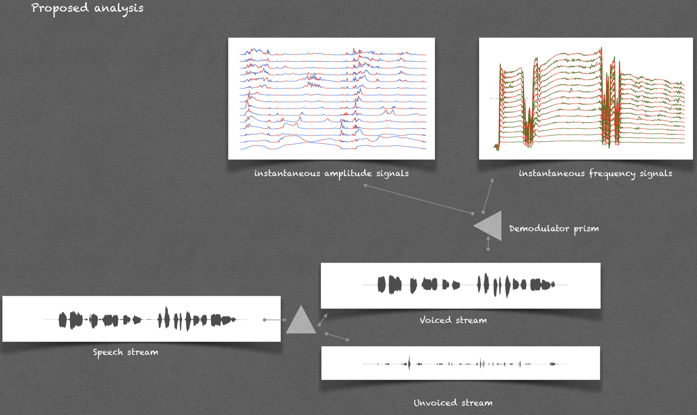
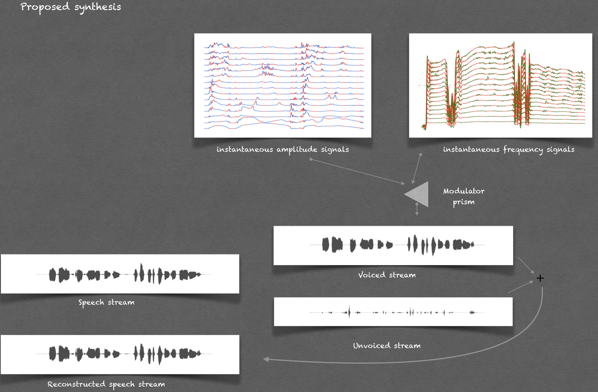
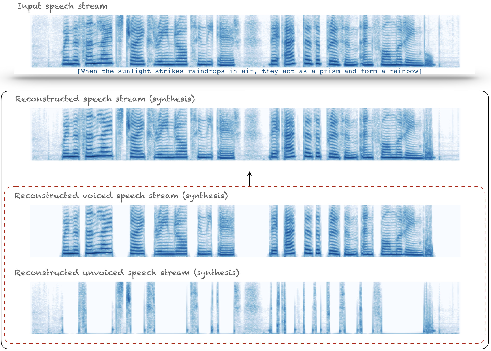
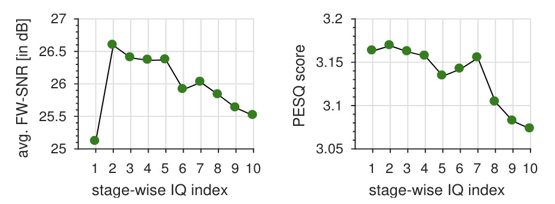
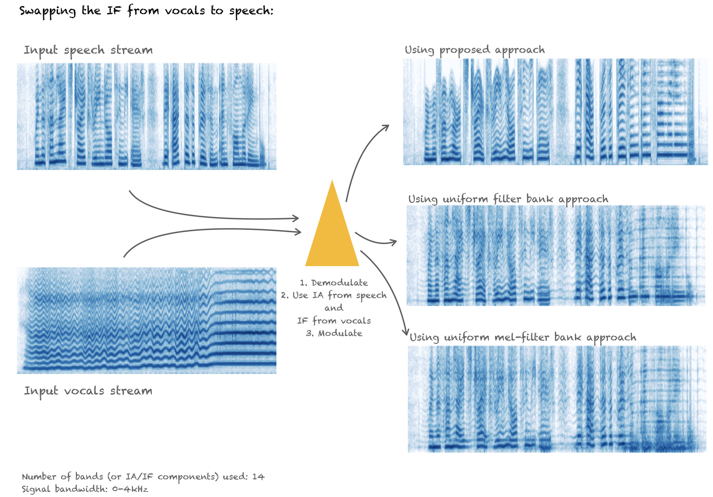
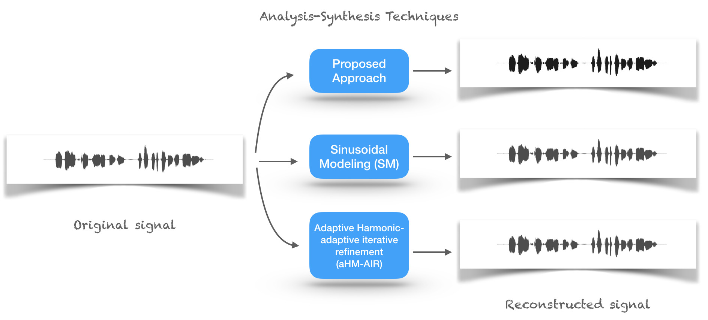

Speech signals contain a fairly rich time-evolving spectral content. Accurate analysis of this time-evolving spectrum is an open challenge in signal processing.
Towards this, we visit time-varying sinusoidal modeling of speech and propose an alternate model estimation approach.
The estimation operates on the whole signal without any short-time analysis.
The approach proceeds by extracting the fundamental frequency sinusoid (FFS) from speech signal.
The instantaneous amplitude (IA) of the FFS is used for voiced/unvoiced stream segregation.
The voiced stream is then demodulated using a variant of in-phase and quadrature-phase demodulation carried at harmonics of the FFS.
The result is a non-parametric time-varying sinusoidal representation, specifically,
an additive mixture of quasi-harmonic sinusoids for voiced stream and a wideband mono-component sinusoid for unvoiced stream.
The representation is evaluated for analysis-synthesis, and the bandwidth of IA and IF signals are found to be crucial in preserving the quality. Also, the obtained IA and IF signals are found to be carriers of perceived speech attributes, such as speaker characteristics and intelligibility.
On comparing the proposed modeling framework with the existing approaches, which operate on short-time segments, improvement is found in simplicity of implementation, computation time, and quality of synthesis.
In summary, the proposed representation lends itself for high resolution temporal analysis of non-stationary speech signals, and also allows quality preserving modification and synthesis.
The details of the method are submitted as a manuscript to the Journal of Speech Communication. Below we have provided some illustration of the method using some figures and speech signals.



Below you can listen to anlysis-synthesis of a sample audio signal reconstructed using the proposed approach.
Original signal
Reconstructed signal (after stage-1 IQ)
Reconstructed signal (after stage-2 IQ)
Reconstructed signal (after stage-10 IQ)
Reconstructed voiced stream
Reconstructed unvoiced stream

Swapping

Input speech stream
Input vocals stream
Swapping using IA, IF estimates from proposed approach
Swapping using IA, IF estimates from uniform bandwidth filter bank
Swapping using IA, IF estimates from uniform mel-bandwidth filter bank
Comparison

A. Male speech samples drawn from 8 different talkers.
1. Original
Proposed
SM (Exsting approach)
aHM-AIR (Exsting approach)
2. Original
Proposed
SM (Exsting approach)
aHM-AIR (Exsting approach)
3. Original
Proposed
SM (Exsting approach)
aHM-AIR (Exsting approach)
4. Original
Proposed
SM (Exsting approach)
aHM-AIR (Exsting approach)
5. Original
Proposed
SM (Exsting approach)
aHM-AIR (Exsting approach)
6. Original
Proposed
SM (Exsting approach)
aHM-AIR (Exsting approach)
7. Original
Proposed
SM (Exsting approach)
aHM-AIR (Exsting approach)
8. Original
Proposed
SM (Exsting approach)
aHM-AIR (Exsting approach)
B. Female speech samples drawn from 8 different talkers.